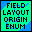
Enum typedef allowing selection of the origin of a field definition.
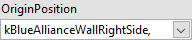
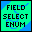
Enum type to select a particular FRC Field definition.
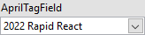
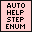
Enumerated data type for Drum Sequence Step output.
This contains upto 32 steps, Cancel, Error, Initialize, and Do Nothing states
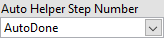
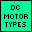
An enumerated variable type containing all the standard motors.
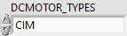
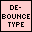
An enumerated variable type containing all the standard motors.
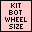
Enumerated variable for standard wheel diameters (in inches) for the Andy Mark Kit robot.

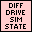
An enumerated varible containing pneumonics for the state indices of the Differential Drive Train sim system.

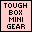
An enumerated variable listing the gear ratio choices for the Andy Mark ToughBox Mini gearbox that is part of the standard kit of parts.

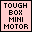
An enumerated variable listing the standard motor choices for the Andy Mark kit of parts drive gear box.


Internal enumerated data type used for internal operations of the Drum Sequencer.
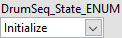
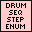
Enumerated data type for Drum Sequence Step output.
This contains upto 32 steps, Cancel, Error, Initialize, and Do Nothing states
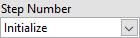
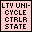
An enumerated varible containing States of the LV Unicycle Controller drivetrain system
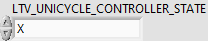
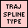
A ENUM (Enumerated variable) allowing the choice of the types of splies that can be used to generate trajectories.

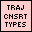
An enumerated variable type containing all the standard motors.
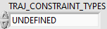